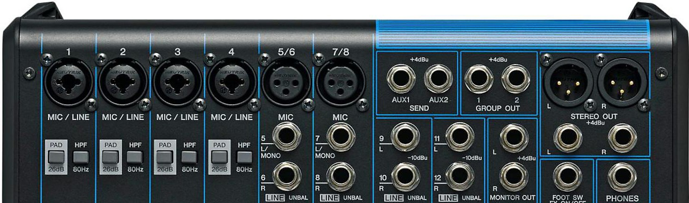
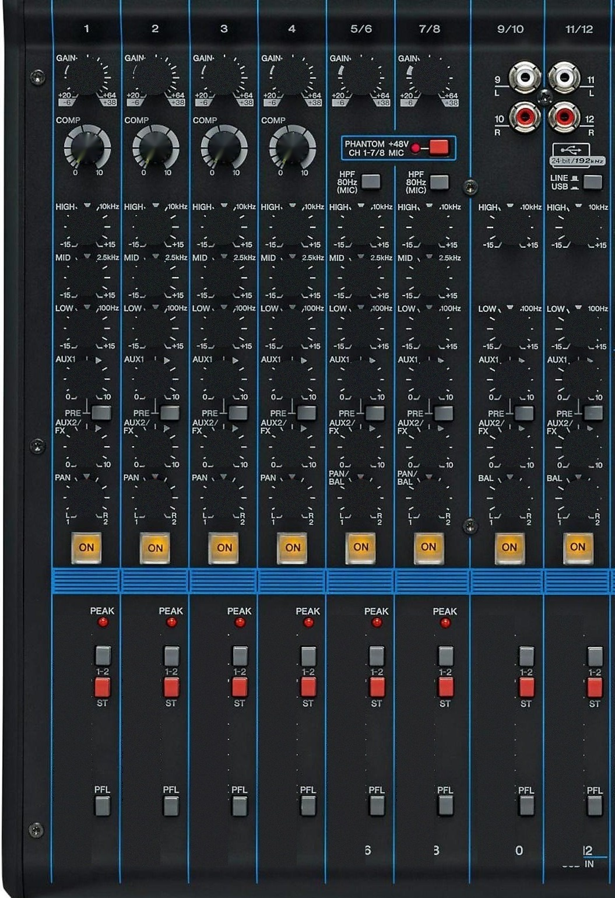
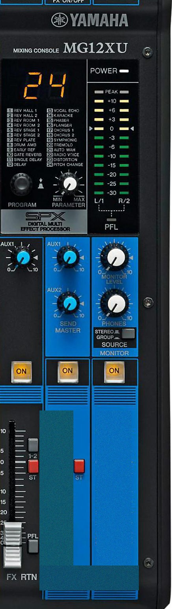
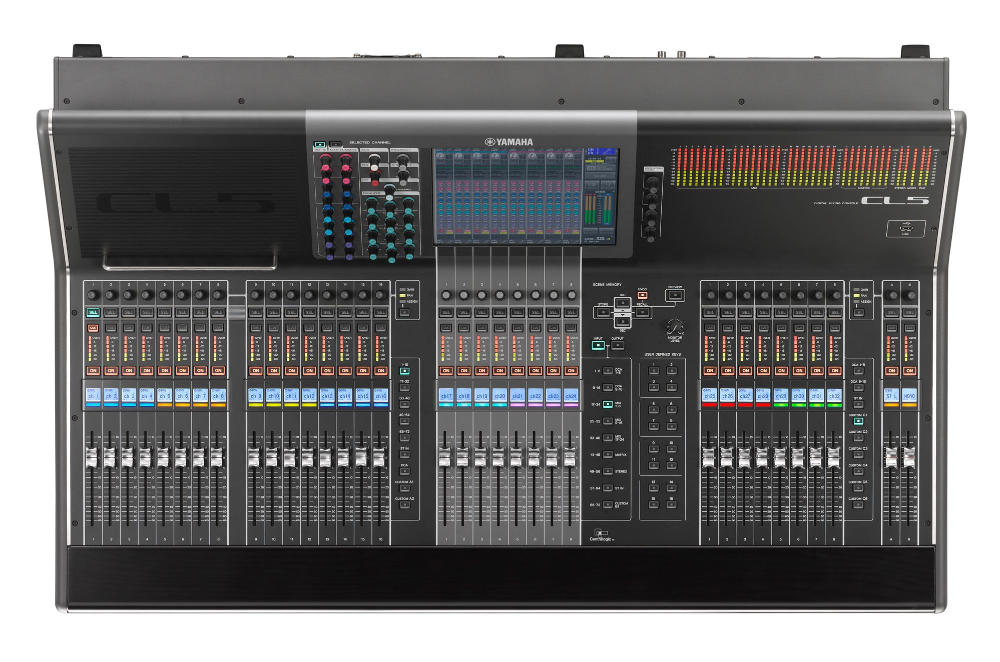

확성 시스템의 기본
1) 마이크 ➔ 스피커
2) 마이크 ➔ 콘솔 ➔ 스피커
3) 마이크 ➔ 콘솔 ➔ 앰프 ➔ 스피커
음향 트러블슈팅
이미 설치된 시스템에 고장이 하나 생겼습니다. 증상을 읽고 3D 화면에서 장비를 살펴본 뒤 원인을 골라 제출하세요. 맞히면 직접 고치고 최종 확인까지 해 보세요.
MG12XU 콘솔 실습
실습 게임 · MG12XU 콘솔로 음향 시스템 구축해보기



📖 기능부 설명 전체 보기
- 입력 단자 (MIC / LINE)마이크나 악기를 꽂는 곳입니다. 1~4번은 XLR과 잭을 함께 쓰는 콤보 단자(MIC/LINE), 5~8번은 MIC(XLR)와 LINE(잭)이 따로 있고, 9~12번은 스테레오 라인 입력(잭·RCA)과 USB 오디오 입력입니다.
- PAD · HPFPAD는 입력 신호를 26dB 줄여 큰 소리(라인 기기, 드럼 등)가 찌그러지지 않게 합니다. HPF는 80Hz 아래 저음(무대 울림, 핸들링 소음, 바람 소리)을 잘라냅니다. 보컬·말 마이크는 HPF를 켜 두는 경우가 많습니다.
- 팬텀 전원 (+48V)콘덴서 마이크에 필요한 +48V 전원으로, CH1~7/8 MIC 입력에 한꺼번에 걸립니다. SM58 같은 다이내믹 마이크에는 필요 없고, 마이크를 꽂거나 뺄 때는 꺼 두는 것이 안전합니다.
- GAIN · PEAK입력 신호를 알맞은 크기로 키우는 첫 단계입니다. 실제로 말하거나 노래하게 하면서 GAIN을 올리고, PEAK 램프가 가끔 깜빡이면 조금 내립니다. 음량은 GAIN이 아니라 페이더로 맞춥니다.
- COMP (컴프레서)1~4번 채널의 원 노브 컴프레서입니다. 오른쪽으로 돌릴수록 큰 소리를 눌러 작은 소리와의 차이를 줄입니다. 말소리·보컬을 고르게 할 때 조금만 사용합니다.
- EQ (HIGH · MID · LOW)3밴드 이퀄라이저입니다. HIGH 10kHz, MID 2.5kHz, LOW 100Hz를 ±15dB 조절합니다(9~12번은 HIGH·LOW만). 가운데(0)가 기본이고, 거슬리는 대역을 조금 깎는 쪽으로 쓰는 것이 좋습니다.
- AUX1 (모니터 보내기)무대 모니터 스피커(연주자·싱어가 듣는 소리)로 보내는 양입니다. 채널마다 AUX1 노브로 보내고, SEND MASTER의 AUX1로 전체 양을 정하면 AUX1 SEND 단자로 나갑니다. PRE 버튼을 누르면 페이더와 상관없이 보냅니다.
- AUX2/FX · SPX 이펙터 · FX RTN내장 SPX 이펙터(리버브·딜레이)로 보내는 경로입니다. 채널 AUX2/FX 노브 → SEND MASTER AUX2 → SPX(PROGRAM으로 효과 선택, PARAMETER로 길이 조절) → FX RTN 페이더로 메인에 섞입니다. AUX2 SEND 단자로 외부 장비에 보낼 수도 있습니다.
- PAN / BAL소리를 왼쪽(L)·오른쪽(R) 어디에 둘지 정합니다. 스테레오 채널(5/6 이후)은 BAL로 좌우 균형을 맞춥니다.
- ON (채널 켜기)채널을 켜고 끄는 버튼입니다(켜지면 불이 들어옴). 꺼지면 메인·그룹·FX와 페이더 뒤(POST) AUX로 나가는 소리가 모두 꺼집니다.
- 버스 할당 (1-2 / ST)채널 소리를 어디로 보낼지 고릅니다. ST는 STEREO(메인) 버스, 1-2는 GROUP 1-2 버스입니다. 보통 ST를 켜 둡니다.
- 채널 페이더채널의 최종 음량입니다. 0 표시(유니티) 근처에서 쓰는 것이 기본이고, 페이더를 많이 올려야 한다면 GAIN이 낮은 것은 아닌지 먼저 확인합니다.
- PFL (사전 청취)PFL을 누르면 페이더 앞 신호를 헤드폰(PHONES)과 레벨 미터로 따로 들어볼 수 있습니다. 메인 소리를 건드리지 않고 GAIN을 맞추거나 문제 채널을 찾을 때 씁니다.
- GROUP 1-2GROUP 1-2 버스의 마스터입니다. 여러 채널을 묶어 한 번에 조절하거나 GROUP OUT 단자로 따로 내보냅니다. ST 버튼을 누르면 STEREO 메인에도 섞입니다.
- STEREO 마스터 (메인 출력)메인 출력(L/R)의 마스터 페이더입니다. 여기 신호가 STEREO OUT(XLR·잭) 단자로 나가 메인 스피커나 파워앰프로 갑니다.
- 레벨 미터 · POWERSTEREO 출력(PFL을 누르면 그 채널)의 레벨을 보여 줍니다. 0 근처에서 가끔 노란색까지 오르는 정도가 알맞고, 빨간색(+10)이 자주 켜지면 줄입니다. POWER 램프는 전원 표시입니다.
- 모니터 · 헤드폰엔지니어가 듣는 모니터입니다. MONITOR LEVEL은 MONITOR OUT 단자(컨트롤룸 모니터 스피커), PHONES는 헤드폰 음량이고, SOURCE 스위치로 STEREO와 GROUP 중 들을 소스를 고릅니다.
- FOOT SW (풋 스위치)발로 밟는 스위치를 꽂아 내장 이펙터(FX)를 켜고 끕니다.
3층 음향 시스템
장비를 누르면 그 장비의 신호가 지나가는 길만 선으로 그려져요. 움직이는 점이 신호가 가는 방향이에요.
실제 설치 위치의 장비를 둘러봐요. 목록·이름표·장비를 누르면 그 장비로 이동해서 역할과 연결(어디서 받고 어디로 보내는지)을 보여 줘요. 좌/우는 회중석에서 단상을 바라본 기준이에요.
장비는 실제 설치 위치에 놓여 있어요. 장비(또는 이름표)를 누른 채 끌어서 연결할 장비 위에 놓으면 케이블이 이어져요. 다 이었으면 아래 「케이블 연결 검증하기」를 누르세요.
화면 조작: 드래그 회전 · 휠/핀치 확대·축소 · 오른쪽 드래그 이동
🔌 케이블 모드: 첫 번째 장비를 클릭하세요 (예: 콘솔 ➔ 스테이지박스)
🏛️ 3D 공간을 불러오는 중…
장소로 이동
장비
📦 배치할 장비 — 고른 뒤 3D 공간을 누르세요
CL5 콘솔 트레이닝
시작을 누르면 예배 식순이 하나씩 나와요. 식순이 바뀌면 5초 안에 콘솔 사진에서 그 순서에 맞는 채널의 ON 버튼을 누르세요.
▶ 시작 버튼을 누르면 예배 식순이 순서대로 하나씩 나타납니다.
이름은 이 브라우저에만 저장돼요. 함께 쓰려면 내보내기로 만든 파일을 다른 사람이 불러오기로 열면 돼요.
DCA 그룹
카드를 누르면 묶인 채널이 한꺼번에 꺼지고(MUTE) 다시 누르면 원래대로 켜져요. 꺼진 채널은 콘솔 사진의 ON 버튼이 깜박여요.

Ear Training · 청음과 밸런스
볼륨 변화 맞히기, 대역별 소리 비교, 멀티트랙 밸런스 맞추기로 귀를 훈련해요.
🔊 볼륨 변화 트레이닝
+0 dB
🔵 기준과 🟠 변화된 소리를 번갈아 듣고, 몇 dB 바뀌었는지 맞혀 보세요.
🔒 ???
기준 대비 몇 dB 변했는지 골라보세요
🗣 대역별 오디오 샘플 비교 청취
1~7번 샘플을 눌러 대역별 소리를 비교해 보세요.
Sample(All) 원본 소스와 똑같은 밸런스가 되도록 개별 트랙 페이더를 맞춰보세요
멀티트랙 믹스 밸런스 맞추기
01
0.0
SOLO
MUTE
FIXED (0dB)
+10+50510203040∞
기준
02
-∞
SOLO
MUTE
LOCK
+10+50510203040∞
03
-∞
SOLO
MUTE
LOCK
+10+50510203040∞
04
-∞
SOLO
MUTE
LOCK
+10+50510203040∞
05
-∞
SOLO
MUTE
LOCK
+10+50510203040∞
06
-∞
SOLO
MUTE
LOCK
+10+50510203040∞
07
-∞
SOLO
MUTE
LOCK
+10+50510203040∞
08
-∞
SOLO
MUTE
LOCK
+10+50510203040∞
세계 최고의 실력자가 되자!
■ 우리가 하나님의 영광을 드러내기 위한 것이다. 얼마든지 잘할 수 있다. 문화부에서 창설해 나가야 한다. 세계에서 최고 가는 것 말이다. 여러분들이 잠들어 있어서는 안된다. ‘문화부가 일어서기 전에는 발전이 있겠는가’ 이런 생각을 하고 분발하기 바란다.
0 / 10주 완료